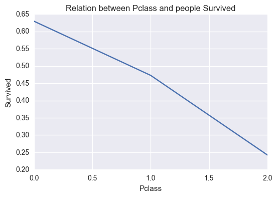
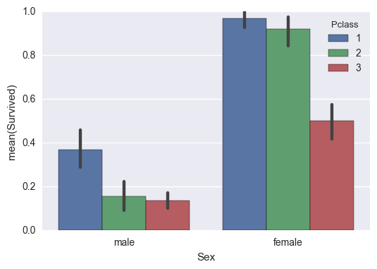
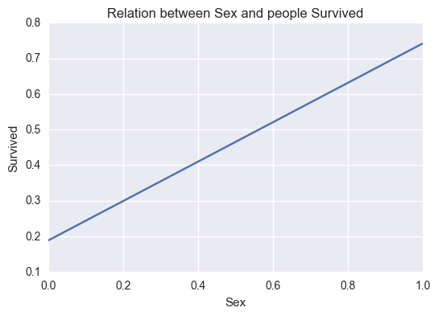
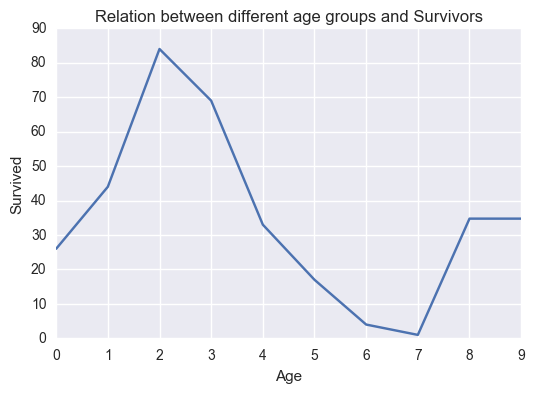
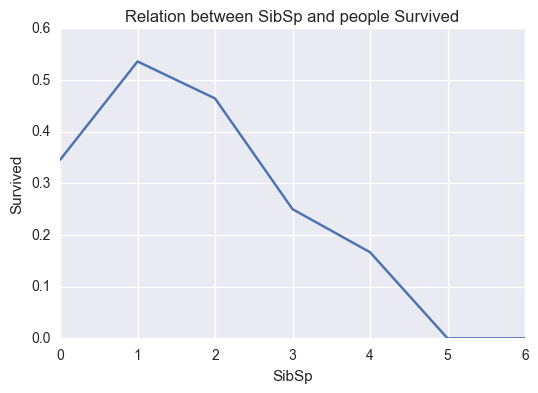
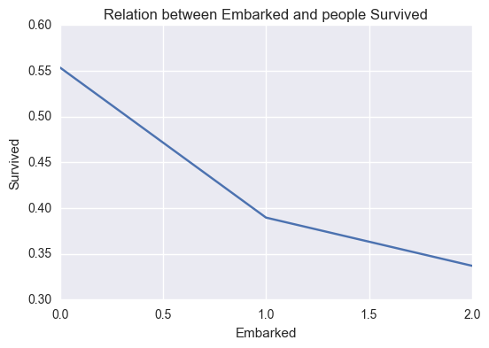
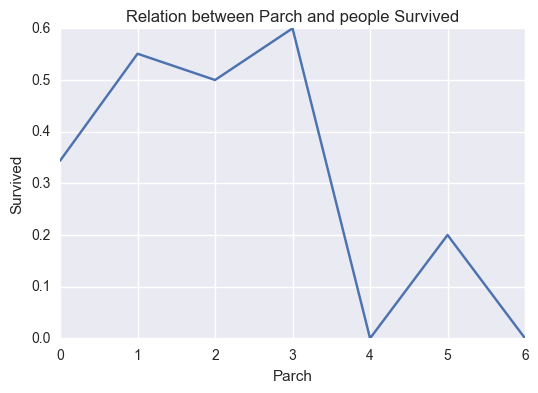

Titanic Dataset
Question
- How different variables are dependent on no of people survived ?
- What is the highest age who has survived?
- How many males and females survived from this accident?
- what is the percentage of people survived?
#Now fetching the titanic data using pandas
import pandas as pd
titanic_data=pd.read_csv('titanic-data.csv')
Total_people_survived=titanic_data['Survived'].sum()
print Total_people_survived
total_size=titanic_data.count(axis=0)
print total_size['Survived']
percentage_of_people_survived = ((Total_people_survived)/(total_size))['Survived']*100
print percentage_of_people_survived
342
891
38.3838383838
%matplotlib inline
import matplotlib.pyplot as plt
import seaborn as sns
def relation(x,y):
people_survived= titanic_data.groupby(x,as_index=False).mean()
plt.xlabel(x)
plt.ylabel(y)
plt.title("Relation between "+x+" and people "+y)
print plt.plot(people_survived[y])
def correlation(x,y):
std_x=(x-x.mean())/x.std()
std_y=(y-y.mean())/y.std()
return (std_x*std_y).mean()
relation('Pclass','Survived')
correlation(titanic_data['Pclass'],titanic_data['Survived'])
[<matplotlib.lines.Line2D object at 0x00000000094FE208>]
-0.33810114703176608

Conclusion 1
- It can be seen that the high class people were the ones who survived. High class people are the one who were rescued first.
- It can be seen from correlation being negative that as class goes from 1st to third class the survivors decrease.
%matplotlib inline
import matplotlib.pyplot as plt
import seaborn as sns
# people_survived=titanic_data['Age']
sns.barplot(x="Sex", y="Survived", hue="Pclass", data=titanic_data);

def sexs(string):
if string=='male':
return 0
else:
return 1
titanic_data['Sex']=titanic_data['Sex'].apply(sexs)
relation('Sex','Survived')
correlation(titanic_data['Sex'],titanic_data['Survived'])
[<matplotlib.lines.Line2D object at 0x000000000B98C940>]
0.54274155868170826

max_females_survived= titanic_data.groupby('Survived',as_index=False)['Sex'].sum()
print max_females_survived[1:]
total_males_survived=Total_people_survived-max_females_survived[1:]
print total_males_survived
Survived Sex
1 1 233
Survived Sex
1 341 109
Here 0 on X axis refers to male population 1 on X axis refers to female population
Conclusion 2
-
This can be seen in the graph that females were rescued first.
-
positive Correlation also proves the above relation.
-
342 people survived from the accident.
-
233 females and 109 males survived from the incident.
-
38 percent people survived from the tragedy.
correlation(titanic_data['Age'],titanic_data['Survived'])
-0.077884306616092594
max_age_of_people_survived= titanic_data.groupby('Survived',as_index=False)['Age'].max()
print max_age_of_people_survived
Survived Age
0 0 (70, 80]
1 1 (70, 80]
titanic_data['Age']=pd.cut(titanic_data['Age'],[1,10,20,30,40,50,60,70,80,90,100])
%matplotlib inline
import matplotlib.pyplot as plt
import seaborn as sns
def relation_age(x,y):
people_survived= titanic_data.groupby(x,as_index=False).sum()
plt.xlabel(x)
plt.ylabel(y)
plt.title('Relation between different age groups and Survivors')
people_survived=people_survived.fillna(people_survived.mean())
print people_survived[x]
print plt.plot(people_survived[y])
relation_age('Age','Survived')
0 (1, 10]
1 (10, 20]
2 (20, 30]
3 (30, 40]
4 (40, 50]
5 (50, 60]
6 (60, 70]
7 (70, 80]
8 (80, 90]
9 (90, 100]
Name: Age, dtype: category
Categories (10, object): [(1, 10] < (10, 20] < (20, 30] < (30, 40] ... (60, 70] < (70, 80] < (80, 90] < (90, 100]]
[<matplotlib.lines.Line2D object at 0x000000000947DDA0>]

Conclusion 3
- Younger age group people (20-30)yrs tend to survive from the accident more than the smaller children and people of older age.
- From negative correlation it can be seen as age increase tendency to survive decrease.
- Maximum age of person survived is 80 Yrs
relation('SibSp','Survived')
correlation(titanic_data['SibSp'],titanic_data['Survived'])
[<matplotlib.lines.Line2D object at 0x000000000CFC16D8>]
-0.035282855228175827

Conclusion 4
- Less siblings tendency to survival increases.
- negative correlation proves the above statement as well.
relation('Embarked','Survived')
[<matplotlib.lines.Line2D object at 0x000000000C00B828>]

0 C 1 Q 2 S Name: Embarked, dtype: object
relation('Parch','Survived')
correlation(titanic_data['Parch'],titanic_data['Survived'])
[<matplotlib.lines.Line2D object at 0x000000000C53B358>]
0.081537791587317957

There is not much relation seen in this case.
References
- https://pandas.pydata.org/pandas-docs/stable/generated/pandas.cut.html
- https://stackoverflow.com/questions/17841149/pandas-groupby-how-to-get-a-union-of-strings
- https://classroom.udacity.com/nanodegrees/nd002/parts/0021345403/modules/317671873575460/lessons/5430778793/concepts/53961386540923
- https://matplotlib.org/api/pyplot_api.html
Limitation
- The difference between the sample and the population, we don't know how the sample was chosen from the actual population of people that were on the Titanic. There could have been some sort of intentional or unintentional bias in how the sample was selected.